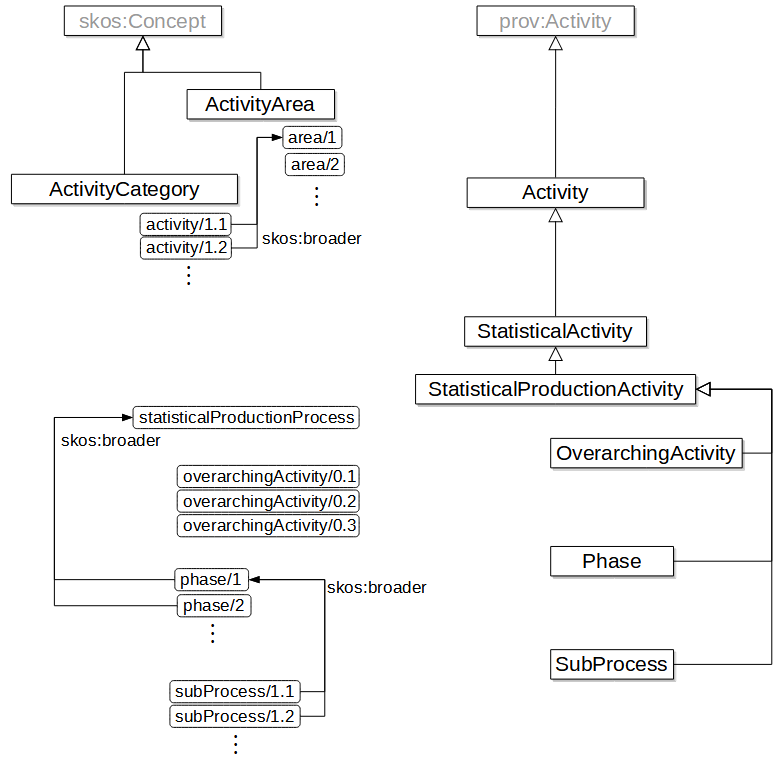
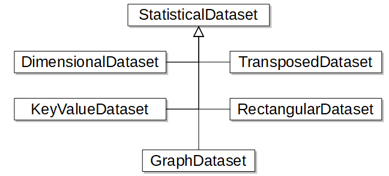

This is a draft document and may be updated, replaced or obsoleted by other documents at any time. It is inappropriate to cite this document as other than work in progress.
Background and Motivation
The Official Statistics community has been collaborating for some years in order to define business models aiming at building common representations of its processes and information. These works, mostly conducted under the auspices of the UNECE High-Level Group for the Modernisation of Official Statistics (ModernStats), include the Generic Statistical Business Process Model (GSBPM), the Generic Statistical Information Model (GSIM), the Generic Activity Model for Statistical Organisation (GAMSO), and the Common Statistical Data Architecture (CSDA).
GSBPM provides a framework to describe the building blocks of statistical production in terms of sub-processes. Its main goal is to help statistical organizations standardize their statistical production processes. It was the first ModernStats model to be published, back in 2008, and has been widely used by national and international statistical agencies since then.
GAMSO provides a framework to describe the building blocks of statistical production in terms of activities. It complements the GSBPM in two ways: (i) by covering areas beyond the scope of GSBPM, and (ii) by providing a business capability view of statistical production itself.
GSIM complements both GSBPM and GAMSO by providing a catalogue of information objects to describe statistical data and metadata. It functions as a reference framework consisting of a set of standardised information objects to be used in statistical production.
CSDA provides a capability framework cataloguing the mayor abilities a statistical organization has to use, produce, share and manage data and metadata. CSDA integrates with the GSBPM and GAMSO by enabling processes and activities related to the lifecycle management of GSIM information objects.
As more and more statistical offices turn to semantic standards in order to formalize their data and metadata, it is time to build on our international core models to establish common foundations on which the different works can develop in a coherent way. This should be done using a formal framework that allows interoperability, activation and globally unique identification.
This paper proposes a first try at a base OWL vocabulary for Official Statistics. It suggests formal representations for the core concepts used in our domain. It builds on a set of well-known OWL vocabularies, namely SKOS, PROV, ORG, DCAT and the Dublin Core.
In the following sections, we stay at a very general model and deal with the following domains: statistical activities, products and actors. For more precise definitions like those that can be found in the GSIM or in CSPA, we refer to previous works: [[GSBPM-LM]] and [[GSIM-LM]] respectively.
Introduction
The ontology covers statististical activities, organizations and products.
Objectives and scope
The ontology does not aim to cover the domains exhaustively. Inclusion criteria for a concept are:
The concept helps clarifying and harmonizing the terminology
The concept helps brigding constructs from different models
The concept helps connecting statistical models to other well-known vocabularies
The ontology also defines a large number of individuals (class instances) in order to standardize their naming and identification.
Overview
TBD.
Include:
Reference to governance policy of Unece MOS "stuff"
Specific policy elements that apply to COOS
COOS Namespace and Vocabulary
The COOS namespace URI is:
http://id.unece.org/def/coos#
The prefix coos will be associated to this namespace in all this document.
The COOS vocabulary is a set of URIs, given in the left-hand column in the table below. The right hand column indicates in which section below the corresponding term is explained in more detail.
COOS also defines a number of individuals which are mostly instances of the classes above: those are described in more detail in the relevant sections.
Other vocabularies used in this document or in the RDF specification are listed in the table below, with their namespaces and associated prefixes.
Table 2. Other vocabularies used in this document
Prefix
URI
Description
cc
https://creativecommons.org/ns
Describing Copyright in RDF: Creative Commons Rights Expression Language ([[!CC-ABOUT]])
dc
http://purl.org/dc/elements/1.1/
Dublin Core Metadata Element Set, Version 1.1 ([[!DC11]])
PAV - Provenance, Authoring and Versioning ([[!PAV]])
prov
http://www.w3.org/ns/prov#
PROV-O: The PROV Ontology ([[!prov-o]])
skos
http://www.w3.org/2004/02/skos/core#
SKOS Simple Knowledge Organization System Reference ([[!skos-reference]])
vann
http://purl.org/vocab/vann/
VANN: A vocabulary for annotating vocabulary descriptions ([[!vann]])
voaf
http://purl.org/vocommons/voaf#
Vocabulary of a Friend (VOAF) ([[!voaf]])
RDF, RDFS, OWL and XSD vocabularies or namespaces are also used, with their usual URIs and prefixes.
The RDF examples are expressed with the Terse RDF Triple language (Turtle) [[turtle]]. Unless otherwise specified, these examples use the http://example.org/ns/, which will be represented by the ex: prefix. Note however that individual resource names used as examples are entirely fictitious.
Include of reference the naming policy
Activities
A large part of the COOS is related to the activities performed by statistical organizations. Indeed, the GSBPM model was one of the first to be standardized at the international level, and remains the most widely used of the Unece models. The GAMSO appeared later, and was subsequently articulated with the GSBPM in a coherent scheme.
In this section, we will follow this historic view and start by describing the COOS artefacts that originate from the GSBPM, then add the GAMSO view. Other useful COOS constructs related to the Official Statistics activities are listed in a third sub-section.
Base GSBPM model
Evolution of the model, now in version 5.1.
Use cases.
Structure
A first approach to modeling statistical activities, based on the GSBPM, is presented in [[GSBPM-LM]]. Basically, three classes are defined in this GSBPM ontology: StatisticalProductionActivity, Phase and SubProcess.
StatisticalProductionActivity is a sub-class of both prov:Activity and skos:Concept. Using SKOS allows us to organize the activities in schemes, like GSBPM or GAMSO. Using PROV allows us to specify who undertakes an activity and what entities it consumes or produces.
ex:produce-study a coos:StatisticalProductionActivity ;
rdfs:label "Produce study"@en .
Phase and SubProcess are both sub-classes of StatisticalProductionActivity and represent respectively the concepts of a GSBPM phase and GSBPM sub-process.
The ontology actually defines an individual for each GSBPM phase, sub-process, and overarching activities, as well as two specific individuals: the GSBPM itself, which is viewed as as a skos:ConceptScheme (the scheme of all the GSBPM phases, sub-processes and overarching activities), and statisticalProductionProcess, which is an instance of StatisticalProductionActivity that represents statistical production process as a whole.
The links between the different individuals are represented by the usual SKOS properties: all the sub-processes of a phase have a skos:broader link to the phase, and each phase has a skos:broader link to the statisticalProductionProcess individual. Additionally, the idea that each phase is made up of its different sub-processes can be represented by using the Dublin Core dcterms:hasPart and dcterms:isPartOf properties.
The following figure summarizes the vocabulary terms defined until now.
GSBPM vocabulary overview
Adding GAMSO
Introducing GAMSO in this framework is not very difficult, but raises a few interesting questions. If we look at the terminology used in GAMSO, we find that the main concepts used are activity and activity area.
For the concept of activity, the simpler idea is to introduce a StatisticalActivity class that would be a daughter of prov:Activity and a mother of StatisticalProductionActivity. All second-level GAMSO activities would be instances of this StatisticalActivity class.
For the activity areas, the question is a bit more tricky: are these really activities, or just boxes where we classify the second-level activities? In the first case, activity areas will be themselves instances of StatisticalActivity, in the second case (represented below) they will just be instances of skos:Concept or of a specific StatisticalActivityArea sub-class. The answer can in fact be different for each GAMSO activity area: that does not change the global structure of the ontology.

GAMSO vocabulary overview
As previously for the GSBPM, individuals would be defined for each activity and activity area, and the GAMSO itself would be a skos:ConceptScheme with all four activity areas having skos:broader links to it.
In addition, we need two properties to describe how an Activity relates to a StatisticalProductionActivity:
supports: it means to enable to perform or function. We say that an Activity, e.g. GAMSO Manage Statistical Methods, supports a StatisticalProductionActivity, e.g. a GSBPM Phase.
uses: it means to require to perform or function. We say that a StatisticalProductionActivity, e.g. GSBPM Overarching Processes, uses an Activity, e.g. Manage IT.
Properties uses and supports are inverses of each other. They are weaker (looser) forms of dependencies than partitive relationships: uses/supports are about function whereas part/whole are about constitution.
A few points should be studied further:
The notes of the second-level GAMSO activities are very well structured, so it would be possible to replace (or double) them with lists of individual concepts for third-level activities. For example, activity 2.1.1 ('Identify disruptions and capability improvements') would be added in the figure above with a skso:broader link to the activity 2.1.
We could refine the model by introducing more specific classes, for example StatisticalSupportActivity, StatisticalStategicActivity, etc. That should be justified by well-defined use cases.
The relation between the GSBPM as a concept scheme and as an activity area has to be precised. For now we can use a simple rdf:seeAlso property, but in a totally integrated view, all GSBPM and GAMSO artefacts would go in a single skos:ConceptScheme (the GAMSO) and the GSBPM would not be a concept scheme anymore: it would be an instance of both StatisticalArea and StatisticalProductionActivity.
There is a remaining question about the over-arching processes of the GSBPM. They probably should be viewed as components of the GSBPM concept scheme, and instances of class StatisticalProductionActivity which are not phases or sub-processes; an additional OverArchingProcess (or TransverseActivity, etc.) class could be created.
Some clarification should be made on the relations between similar GSBPM over-arching processes and GAMSO activities, notably 'Quality Management' (GSBPM) and 'Manage Quality' (GAMSO 3.10).
Adding GSIM and CSDA
Adding the Generic Statistical Information Model (GSIM) in this framework allows us to refine StatisticalActivity even further. Parallel to StatisticalProductionActivity we can define three additional sub-classes of StatisticalActivity:
StatisticalProgram: it is essentially a set of activities carried out to produce statistics. These statistics are about the set of units in scope for the program, e.g. “All persons with a university degree”, within a given subject field, e.g. income statistics, tourism, etc.
StatisticalProgramCycle: statistical program activities are often repeated over time in iterations called cycles. A StatisticalProgramCycle is one of those iterations for a specific time and geography.
StatisticalSupportProgram: these are all centralized, corporate-level activities that allow statistical programs to exist and operate. These span from requirements elicitation, design and implementation (GSBPM Phases 1-3) to metadata management data, metadata and quality management (GSBPM overarching processes) and the statistical portion of capability development and corporate support (GAMSO).
Another dimension to consider is that of information capabilities. A capability is an ability a statistical organization possesses to undertake a specific activity. It is only achieved through the integration of all relevant capability elements (e.g. methods, processes, standards and frameworks, IT systems and people skills). The notion of capability is often used in enterprise architecture approaches like TOGAF or, in the statistical domain, the Common Statistical Data Architecture [[CSDA]]. Capabilities can be mapped to strategic goals and objectives and provide a useful starting point to map lower level elements such as business process and functions, applications and technology assets.
Core capabilities: capabilities the organization needs to execute its core business, i.e. the production of statistics. They generally map to phases in GSBPM.
Cross-cutting capabilities: capabilities used to formulate and implement the policies that the organization chooses for its internal operations. They generally map to corporate support in GAMSO and overarching processes in GSBPM.
ex:csda-data-integration a coos:Capability ;
rdfs:label "Data integration"@en ;
skos:definition "The ability to combine, link, relate and/or align different data sets in order to create an integrated information set."@en .
Add an example of capability from geospatial domain ("Develop and apply services for smarter statistical-geospatial integration" from GeoStat4).
Add text about link between capabilities and GAMSO area "Develop capabilities" as illustration.
The ESS has a Business Capabilities model that might be worth checking https://joinup.ec.europa.eu/collection/statistical-enterprise-architecture/document/ess-earf-business-capabilities-model (See Figure 2 ESS Business Capabilities model – Levels 0 & 1)
Insert final figure from https://github.com/linked-statistics/COOS/issues/46
More detailed activities
The previous definitions stay in the framework of the GAMSO/GSBPM/GSIM/CSDA, but more precise notions will be needed by the NSIs for the more detailed modelization of their statistical activities. COOS users can adopt different names for these more specific activities that are scoped by a given GSBPM sub-process or overarching activity, but COOS defines the generic Task class as a common term for better interoperability. Tasks can be more or less fine-grained and form hierarchies.
ex:calculate-mean-wages a coos:Task ;
rdfs:label "Calculate mean wages"@en ;
skos:broader <http://id.unece.org/activities/subProcess/5.7> .
ex:produce-study prov:wasInformedBy ex:calculate-mean-wages .
We see in this example how we can use PROV to represent links between activities: here we suppose that the "Produce study" activity uses the results of the "Calculate mean wages" task.
Using PROV with COOS constructs
As mentioned previously, the Task class can be used by NSIs to create instances for their own needs. Two NSIs can create their own "Calculate mean wages" task, and only their labels would indicate that they do similar things. In certain cases however, it could be useful to define standard sub-classes of Task for some widely used and specific types of tasks, for example record linkage or hot-deck imputation. This would allow for example to refer to relevant methodology.
Organizations
The following classes are defined:
Organizations vocabulary overview
StatisticalOrganization: Organization, or unit within an organization, whose primary role is the production of official statistics.
NationalStatisticalInstitute: The main producer of official statistics in a country and/or the organization responsible for coordinating all activities related to the development, production, and dissemination of official statistics in the national statistical system. The actual name given to the national statistical office in a country may be National Statistical Institute (NSI), National Bureau of Statistics (NBS), Central Bureau of Statistics (CBS), National Statistical Agency (NSA), Central Statistical Agency (CSA), Central Statistics Agency (CSA), etc.
InternationalAgency: A body with an international membership, scope, or presence whose primary role is the production of official statistics. There are many types of international organizations. One way of categorizing them is to distinguish between intergovernmental organizations, supranational organizations and international non-governmental organizations.
The use of org:Organization as a mother class allows to benefit from all the constructs of the ORG ontology, for example the org:hasUnit/org:unitOf properties for the representation of the hierarchical links between organizations. The use of prov:Organization allows to capture the relations between organizations, activities and products, for example prov:wasAssociatedWith can link a statistical activity to the NSI that conducts it.
It would also be useful to include in the base ontology instances of StatisticalOrganization representing the existing national statistical institutes and international statistical organizations. This would provide in particular a shared global identifier for each of these organisms.
Is there an "official" list of international agencies and NSIs?
Products
Introduce InformationObject, StatisticalInformationObject and StatisticalEntity here, even if they cover more than products.
The COOS ontology defines two base classes in the "Products" domain: StatisticalProduct and StatisticalDataset.
Provide textual definition of Statistical Product and Statistical Dataset.
Here again, the PROV vocabulary is useful, in particular to provide provenance information on products and to link them to activities and organizations (for example prov:wasGeneratedBy from a product to an activity).
The StatisticalDataset class is also declared as a daughter of dcat:Dataset, which allows to reuse the DCAT (or StatDCAT-AP) possibilities, in particular to document datasets and their different distributions, group them in catalogues, etc.
Products vocabulary main classes
Review the following text (reproduced from Dan's comment in issue #15)
Add comment on renaming "long" to "transposed"
Add metadataFor property
Add constructs about product content and presentation
Rescale figure
In DDI-CDI ([[DDI-CDI]]), four basic structural types of organizing data sets have been defined: rectangular, event history, key-value pair, and dimensional. Here we add the 'graph' type, which covers also tree-like data. Several of the types could be used to structure the same data. There is not a canonical structure in all cases, though some data is much more amenable to one structure over the others.
The types are defined roughly as follows:
rectangular (or wide) - rows are units and columns are variables
event history (or tall or long) - rows are based on the value for each variable, one unit at a time - and this could be visualized as rows are variables and columns are units
dimensional - a pre-defined set of cells defined by the combination of categories, one from each of a set of dimensions (category sets), used to handle the value of some measure (variable) restricted to the cell
key-value - a set of values, each associated with some key
graph - datapoints are nodes and relationships between them are edges in a graph structure
Dimensional data are usually associated with aggregates. Key-value data are often taken from scraping the web. Even-history is used to describe events over some time period.
The nominal, ordinal, interval, ratio are not used to differentiate datasets. Rather, they are families of datatypes used to describe variables. Nominal data are those conforming to a finite set of categories with no other conditions (sex categories). Ordinal data are those conforming to an ordered finite set of categories, but the difference between adjacent categories is not necessarily uniform (Likert scale measures of satisfaction). Interval data are numeric with no zero (absence of quantity) defined (Celsius temperature). Ratio data are numeric with a defined zero (Kelvin temperature). These apply to any kind of statistical data.
The distinction between aggregate and unit data is based on the definition of the variables in the dataset. A dataset can contain both unit and aggregate data.
Access restrictions on data (e.g., public, restricted, private) are assigned by the business and can change over the life-cycle of the dataset.
The domain for a dataset is defined by the subject field that data apply to. However, some datasets are merged from others, so a merged set can have the combination of its constituents. There seems to be no restriction on the number of subject fields.
Mode of transmission is not definitional for a dataset, as a single dataset can be obtained multiple ways. The phases of GSBPM may not be useful, as a single dataset can pass through a phase without change. Further, the phases impose a usage criterion (data for collection; data for editing; etc.) that seems arbitrary and would be useless in another domain (outside statistics).
Similarly, the explorative, temporary, and organizational categorization is based on intent, rather than the data per se. Plus, the categorization could change without any change to the data. If we change the organizational structure described above (rectangular, etc.), then we should call that a new dataset.

Dataset types
Conclusion
This paper proposes a collection of core concepts for official statistics, expressed as OWL constructs backed by elements of well-known standard vocabularies. Work still needs to be done on the precise definition of these concepts, on their properties and on their identification.
More effort is also needed to articulate this base ontology with more sectorial and in-depth works existing on GSIM, CSPA or the SIMS model for quality metadata.
The management and governance of these different initiatives need also to be established.
Share - copy and redistribute the material in any medium or format
Remix - remix, transform, and build upon the material
for any purpose, even commercially.
The licensor cannot revoke these freedoms as long as you follow the license terms.
Under the following terms:
Attribution. You must give appropriate credit, provide a link to the license, and indicate if changes were made. You may do so in any reasonable manner, but not in any way that suggests the licensor endorses you or your use.
No additional restrictions. You may not apply legal terms or technological measures that legally restrict others from doing anything the license permits.
Disclaimer
This deed highlights only some of the key features and terms of the actual license. It is not a license and has no legal value. You should carefully review all of the terms and conditions of the actual license before using the licensed material.
Creative Commons is not a law firm and does not provide legal services. Distributing, displaying, or linking to this deed or the license that it summarizes does not create a lawyer-client or any other relationship.